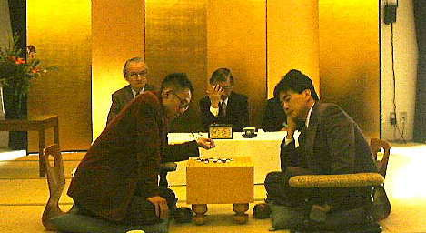

中村茂——连珠界不败的“战神”[37期全日本连珠名人战]
#1 中村茂——连珠界不败的“战神”[37期全日本连珠名人战] 作者：有志青年 发表时间：2008-3-29 21:34:58
——记中村茂卫冕第37期全日本连珠名人战名人位
中村茂——日本藉选手，15岁晋升五段。同年在“全日本名人战”上击败当时的西山厚名人，成为日本连珠史上最年轻的名人。自80年代以来，中村茂的棋艺达到了顶峰并创造了“全日本名人战”（每年一届）11连胜的空前战绩。在第一、二届世界杯A组赛上两夺冠军，一时间被尊为“连珠之神”、“不可逾越的关隘”，同时被公认为“连珠世界第一高手”。
1995年成为寂寞高手的中村茂名人在“有意无意间”败给河村典彦八段后，宣布引退一段时间。1997年，当河村典彦名人被长谷川一人击溃后，中村九段立即宣布重出江湖，在最令人头痛的“全日本名人战资格赛”上以辉煌的全胜战绩成为当仁不让的名人挑战者。此后更是在决赛五番战中直落三局战胜长谷川名人，再次将“名人”称号夺了回来。2000年1月9日，在第37届“全日本名人战”决赛中以不败的战绩再度卫冕成功，又一次向世人证明了自身的实力。接下来向大家介绍这三盘棋
#2 连珠名人战第1局 作者：有志青年 发表时间：2008-3-29 21:38:15
主裁判：早川嘉美九段 计时、记录：高川悌二四段 地点：日本连珠社京都本部
观战者：宫川淳三、日轮ヨシ子、永平松寿、西园典生、奥村丰彦、相乐俊、井绵章久、泽井敏郎
黑 挑战者河村典彦九段 － 假先白 中村 茂 名人
第37期全日本连珠名人战名人位决赛采用五番定胜负制。第一局于1999年10月31日(星期日)在位于京都东山的日本连珠社京都本部举行。上午9点30分，中村名人、河村挑战者到场，会长早川嘉美九段宣布比赛开始。双方在第一局中充分展示了自己的技艺，至下午17点49分，双方各用时210分钟(中间1小时午餐)，大战99手后和棋。
从松月开始的第一局，黑9虽有多种打法，最近关于黑9的研究非常盛行，在按通常的顺序走法中，可以看到挑战者如果单打黑23，白24当然，若黑走25，则白通常走31，实战中名人的白26非常好，黑棋企图进攻陷入了长考，但黑棋没有胜的可能，使局面沉寂下来。中村名人白34后走36，在赛后询问中得知，如果不走这一步，继续打下去，可能会被黑41截住。黑43开始进入中盘战斗(只是观战者的观点，对于局中人好象也就那么回事)，在右上方连续四子后，左下的黑53是好棋，这样一来，名人的棋路有点乱，白如果在64位去止住的话，也许不会有问题，但选择了右上留有胜势的白54。黑57、59也意识到左上防范，就象挑战者的棋中来了一股水流，名人用白60在右下展开，左下也许会能成为什么，但是右边没有白棋的胜势。黑棋打下了绝好的61，白棋只好走62，形成黑胜势。但是河村挑战者63活三，从这一角度看，可以发现有防住白棋的情况，如果在这里能够考虑3分钟的话，以挑战者的实力，黑63单是在94打，能够察觉到黑棋胜势，但河村挑战者错失良机，非常遗憾。但是从这以后，由于名人的攻击已到了读秒阶段，黑89的绝对防是即使考虑1分钟也难以察觉的一着。行至99手后言和。(感想：西园典生)
赛后，中村名人说，白棋走法并非不好，一时间的黑棋胜势虽很危险，但也就那么回事。而河村挑战者则认为，这个白26点本来是我想打的，按照中盘的研究打下去。以后名人的走法非常好。
#3 连珠名人战第２局——名人发威！挑战者伏案 作者：有志青年 发表时间：2008-3-29 21:41:32

主裁判 泽井敏郎七段 计时/记录饭田皓一四段、达富睦初段 地点 冈 汤之花温泉「松园庄」
观战者(敬称略)
早川嘉美、土居 学、高川悌二、达富弘之、达富弘和、北本健二、永平松寿、日轮ヨシ子、中 清行、久保田龙雄、东山雅至、上岛竜一、中野 辉、葛目浩平、奥村幸江、平泽政治、小松通男、冈田吉和、山下晴大、片野晏弘
黑 中村茂 名人 － 先白 河村典彦九段
名人位决战五番胜负的第二局，于12月5日(星期日)上午9:00在京都府龟冈市的汤之花温泉“松园庄”一室举行。主裁判为泽井敏郎七段。不知是对世界杯冠军比赛的泄愤(6局全部执白)，还是由于温泉的能量，名人执黒大发神威，至下午15:06，第47手黒棋完胜。黑用时154分钟，白用时151分钟。
此局是瑞星开局最新研究的一个变化。黒23、25在上边留下优势，黒27更是顺序好。这个局面对于曾在本期争夺挑战权的循环赛中成为挑战者的河村九段来说曾经遇到过，但也不容乐观。白28即使防住，以下也是黒棋追胜。白28尽管很担心下边，如在36位附近落子的话，也许会成为胜负手，但即使这样也是黒胜。从29开始与上边的优势一连接，就防不住了。这成了一盘大家只关注黒方名人的妙着的对局，大家期待着第三局河村挑战者能打一个翻身仗。(西园典生)
#4 连珠名人战第３局——名人战胜挑战者！ 作者：有志青年 发表时间：2008-3-29 21:45:06
在2000年到来之际，盼望已久的第37届连珠名人战名人位决定五番胜负的第3局，2000年1月9日(星期日)在东京的日本连珠协会举行。与已经1胜1和打防卫战的名人进行的比赛，挑战者非常可惜地失败了。双方分别耗时157分和158分。奈良秀树九段为现场监督。名人很少执黑开疏星，挑战者巧妙对应，一度曾形成白必胜的局面，但也许在这时产生了错觉，名人在45手胜，结束了本期的名人战。
先黑 中村 茂 名人 － 白 河村典彦九段
此战中村名人以很少执黑开疏星的战术应战，河村当然选择了白棋并巧妙对应。前11手为定式。黑9、11手称为“早川流”，而白12、14下得很有意思。若黒15成立，则白先前走得棋就无意义了，但白从16手开始到名人的黑19拿出了挑战者的气魄，局势一度很紧张。白20、黒21、白22当然也是争先手，都是正确着法，黒23若走在A还能取得先手，但白若走B又会逆转局面。无奈之下，黒只好走23，而此时双方对局者均未意识到白棋有好棋。长考以后，河村的白24是大大的错误！面对白24，黑25一着算是挑战者头脑中的一个空穴。一直走得都很好的白棋在这一着反胜为败。若白24打在29点上，以下局面虽难解，但也会是白胜，这在观棋室早已得出了结论。但黒25取得先手后，名人的进攻，将优势转为了胜势，又达到必胜，成了反败为胜的一局。对此挑战者非常遗憾，名人在45手胜，结束了本期的名人战。这一局的内容丰富，对双方都有借鉴。(西园典生)
下午15:50，激动人心的时刻，中村名人以2胜1和的战绩，名人位防卫成功。中村名人连续3年夺得此项桂冠，共取得20次名人位，这是一个非常伟大的成就！
第三局赛后，河村挑战者说：“这一局走得太过于认真，当我从16手开始进攻时，我想我能胜。但24手走错了，根本没注意到25位。还是正月犯糊涂啊。应该还有第四局的，没有赢下这一局太遗憾了。明年还要向中村名人挑战。”中村名人则兴奋地说：“很高兴第20次获名人位，总算达到了预期的目的，但今天的第三局真够呛。也许是正月犯糊涂吧。由于非常想执黒，所以打出了“疏星”局，也有可能不太习惯吧。今后会更努力的。”
局后仍目视盘面的挑战者河村九段。 胜利后的中村名人，流露出会心的笑顔．．．
是不是被名人的气势压倒了？
#5 Re:中村茂——连珠界不败的“战神” 作者：逆刃 发表时间：2008-3-29 22:03:15
中村茂这家伙太牛了，宝刀不老啊！#6 Re:中村茂——连珠界不败的“战神”[37期全日本连珠名人战] 作者：小辉 发表时间：2008-4-12 0:28:57
这么厉害啊 15就5段了啊 从小就学吗#7 Re:中村茂——连珠界不败的“战神”[37期全日本连珠名人战] 作者：百医天使 发表时间：2008-4-19 23:17:17
的确很牛的一个棋手